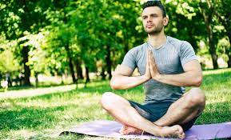
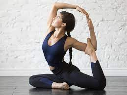

En Yogazone somos nómades muy curiosos y nos hemos permitido experimentar, fuera de nuestra zona de confort, otras formas de ver y vivir la vida. Este afán por ver el mundo exterior, nos llevó directo a los saberes ancestrales de diferentes culturas, convirtiéndose en un gran asombro por el mundo interior que existe en cada uno de nosotros. A la exploración de ese mundo interior nos hemos entregado por completo, con constante estudio y un gran compromiso.
Nuestra misión es expandir herramientas de autoconocimiento y transformación. Como ejes, buscamos recordar quiénes somos, preguntarnos por qué estamos en este mundo y cómo podemos dar servicio para los demás, volver a admirar la belleza de todas las cosas, comprender los ciclos de la vida y volver a la naturaleza. Durante los últimos 4 años hemos estado llevando a personas a retiros para celebrar la vida en entornos naturales y en comunidad, para meditar, comprender la filosofía del Yoga y el Sonido, cantar y bailar, para conectarnos con el espíritu de la Tierra y con nuestra verdadera esencia.
Para recordar nuestra verdadera naturaleza, la de armonía, presencia y felicidad, nos acompañan las prácticas de asana, pranayama, meditación, mantras, bhajans, kirtan y el sonido de instrumentos étnicos, cantos antiguos y tradicionales, la música medicina y devocional, como una terapia vibracional para expandir la conciencia y conectarnos a la Madre Tierra y al Gran Espíritu.
| Leila | Agustin | Mariana |
|---|---|---|
|  |  | |
| Yoga Pincipiantes | Yoga vinyasa | Yoga restaurativo |